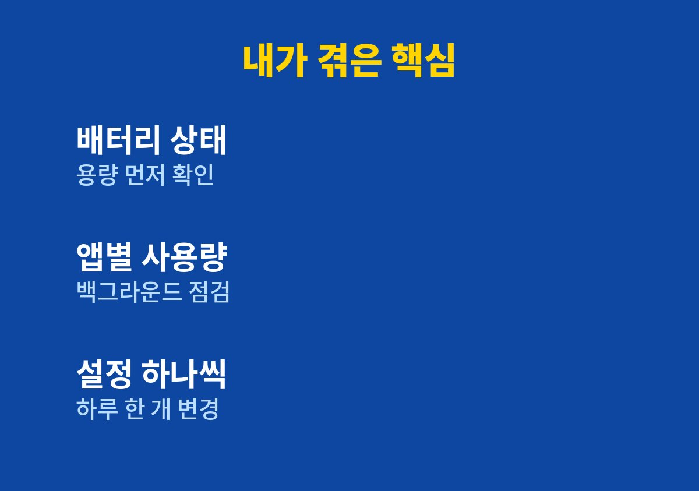

아이폰 배터리 설정을 꼭 알아야 할 기준과 순서 중심으로 정리한다.
이 글은 아이폰을 일과 육아에 함께 쓰느라 오후만 되면 배터리 잔량부터 확인하게 되는 사람을 위해 쓴 글이다.
나도 쇼핑몰 주문 알림을 받고 아이들 사진을 찍다 보면 저녁 전에 충전기를 찾던 사람이다.
단순히 절전 팁을 나열하는 글이 아니라 내가 왜 그 설정을 골랐는지까지 적었다.
읽고 바로 따라 할 수 있도록 순서를 마지막에 번호로 묶어 두었다.
2026년 11월 기준으로 내가 직접 바꿔 보고 효과를 느낀 설정만 정리했다.
나는 집에서 쇼핑몰을 운영하고 아이 둘을 챙기는 사람이다.
주문 알림, 고객 문의, 아이 사진 촬영까지 폰을 쓰는 시간이 길다.
오후 세 시만 되면 잔량이 절반 아래로 내려가 있었다.
외출할 때마다 충전기와 보조배터리를 챙기는 것이 습관이 되었다.
아이를 데리러 가는 길에 지도 앱을 켜면 잔량이 눈에 띄게 줄어드는 것도 불안했다.
배터리가 부족하면 고객 연락을 놓칠 수 있다는 부담이 항상 마음에 있었다.
배터리가 빨리 줄어드는 이유는 크게 부품 노화와 설정, 두 가지로 나뉜다.
운영체제를 업데이트한 직후에는 내부 작업 때문에 며칠간 평소보다 빨리 줄 수 있다고 알려져 있다.
그래서 나는 설정을 건드리기 전에 며칠 기다리며 상태를 지켜보았다.
원인을 모른 채 이것저것 끄면 불편함만 늘고 효과는 알기 어렵다고 판단했다.
그래서 확인과 변경을 따로 나누어 순서대로 진행했다.
설정 앱의 배터리 메뉴에서 배터리 상태 항목을 먼저 확인했다.
최대 용량 수치가 많이 낮다면 설정보다 부품 점검이 먼저라는 판단이 들었다.
내 경우에는 수치가 크게 나쁘지 않아 설정을 손보기로 했다.

같은 배터리 메뉴의 앱별 사용량 목록을 열어 보았다.
업무용 메신저와 지도 앱이 백그라운드에서 꽤 쓰고 있었다.
쓰지도 않는 앱이 뒤에서 계속 새로 고침을 하고 있다는 점이 눈에 띄었다.
이 목록을 보고 나서야 어떤 습관이 전력을 쓰는지 감이 잡혔다.
사용량 숫자를 한 번 보는 것만으로도 줄일 대상이 분명해졌다.
가장 크게 체감한 것은 화면 밝기와 자동 잠금 시간이었다.
자동 잠금을 30초로 줄이니 폰을 켜 둔 채 내려놓는 시간이 짧아졌다.
백그라운드 앱 새로 고침은 꼭 필요한 앱만 남기고 껐다.
주문 알림을 받는 앱은 그대로 두고 쇼핑과 영상 앱은 껐다.
알림이 늦어지면 곤란한 앱은 꺼서는 안 된다고 판단했다.
저전력 모드는 오후에 잔량이 줄어들 때만 켜서 썼다.
| 설정 항목 | 내가 바꾼 방식 | 바꾼 이유 |
|---|---|---|
| 자동 잠금 | 30초로 변경 | 켜 둔 채 두는 시간 감소 |
| 백그라운드 새로 고침 | 필요한 앱만 유지 | 뒤에서 쓰는 전력 감소 |
| 화면 밝기 | 자동 밝기 사용 | 실내 과밝기 방지 |
| 저전력 모드 | 오후에 켜기 | 저녁까지 잔량 확보 |
표의 설정은 모두 되돌릴 수 있어서 부담 없이 하나씩 시험해 볼 수 있다.
한 번에 다 바꾸지 않고 하루에 하나씩 바꾸며 차이를 비교했다.
이렇게 하면 어떤 설정이 나에게 맞았는지 구분할 수 있다.
효과가 없던 설정은 다시 원래대로 돌려놓았다.
기기와 운영체제 버전에 따라 메뉴 이름이 조금 다를 수 있다.
설정을 바꾼 뒤 나는 저녁 일곱 시까지 충전기 없이 버티는 날이 늘었다.
다만 사용 습관과 기기 상태에 따라 체감은 사람마다 다를 수 있다.
수치가 계속 나쁘다면 설정을 더 만지기보다 공식 서비스 센터 점검을 받는 것이 낫다고 생각한다.
오늘 저녁 배터리 메뉴를 열어 최대 용량부터 확인해 보길 권한다.
작은 설정 몇 가지로 하루가 한결 편해지는 경험을 다른 사람도 해 보면 좋겠다.
※ 2026년 기준 개인 사용 경험과 공식 발표를 바탕으로 정리한 글이며, 기기·앱 버전에 따라 메뉴 이름이 다를 수 있다.